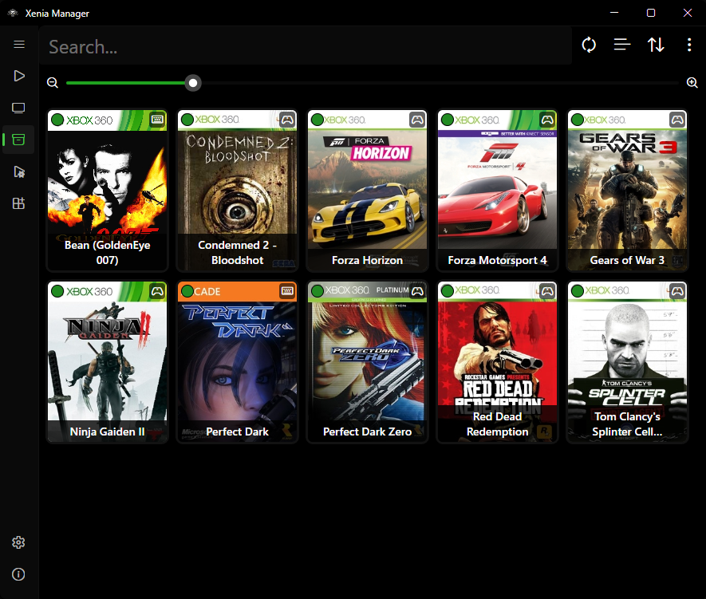

Xenia Manager¶
Xenia Manager is a user-friendly launcher and library manager for the Xenia emulator (Xbox 360 emulator for PC). It handles Xenia installation and updates, game library management, DLC/TU content installation, Canary and Netplay patches, per-game configuration, profiles and saves, and Steam shortcuts - all through one intuitive interface.
Built with .NET 10 and Avalonia, with on-demand loading and caching for low resource usage.

Note: This project is not affiliated with the official Xenia Team.
Supported Emulators¶
Xenia Manager manages three Xenia variants side by side (plus custom installs per game):
| Variant | Executable | Use it for |
|---|---|---|
| Xenia Canary | xenia_canary.exe |
Default. Latest features, best compatibility. Lives in Emulators/Xenia Canary/ |
| Xenia Mousehook | xenia_canary_mousehook.exe |
Keyboard-and-mouse support in supported games. Lives in Emulators/Xenia Mousehook/. Uses bindings.ini |
| Xenia Netplay | xenia_canary_netplay.exe |
Online multiplayer in supported games. Lives in Emulators/Xenia Netplay/ |
| Custom | user-selected .exe |
Per-game override when you want to pin a specific build |
Each variant gets its own content/, config/, patches/, screenshots/, config .toml, and xenia.log folder layout under Emulators/. See Manage Xenia.
Features¶
-
Game Library
Scan folders, track playtime and compatibility, edit details, per-game settings.
-
Manage Xenia
One-click install and update of Canary, Mousehook, and Netplay builds (stable or nightly).
-
Content Installer
Install DLC and Title Updates without launching Xenia. Browse installed content per game.
-
Patches
Download Canary and Netplay game patches, then add, edit, and remove them per game.
-
Xenia Settings
Settings UI that adapts to Xenia's config structure, plus community optimized settings.
-
Profiles & Saves
Import, export, and edit Xenia profiles with automatic save backups. Import/export saves with XUID handling.
-
Steam Shortcuts
Create Steam shortcuts with full artwork so games launch from Steam / Big Picture. Desktop
.lnkshortcuts (Windows-only) included. -
Mousehook
Per-game mouse-and-keyboard controls editor backed by the Mousehook bindings database.
-
Manager Settings
Themes (System, Light, Dark, Amoled, Steam), language, library views, update checks.
-
BigScreen Mode
Fullscreen TV-friendly launcher. Can optionally start instead of the desktop window.
Quick Links¶
- New here? Start with Installation, then follow the Quickstart.
- Looking for a specific screen? Browse the Guides.
- Something not working? Check Troubleshooting and the FAQ.
- Want to build it yourself? See Development.
Data Sources¶
Xenia Manager pulls metadata from community databases (with local caching under Cache/Database/):
- Game titles and artwork - Xbox marketplace database (
x360db) - Compatibility ratings - Canary / Mousehook / Netplay compatibility databases
- Recommended settings - community optimized-settings database
- Patch files - Canary game patches and Netplay patches
- Controller mappings -
gamecontrollerdb.txtfor Xenia SDL input
Disclaimer¶
This wiki documents Xenia Manager, which is not affiliated with or endorsed by the Xenia Team. "Xbox 360" and related marks are trademarks of their respective owners. You must own the games you play; this tool does not provide games, BIOS files, or copyrighted content.